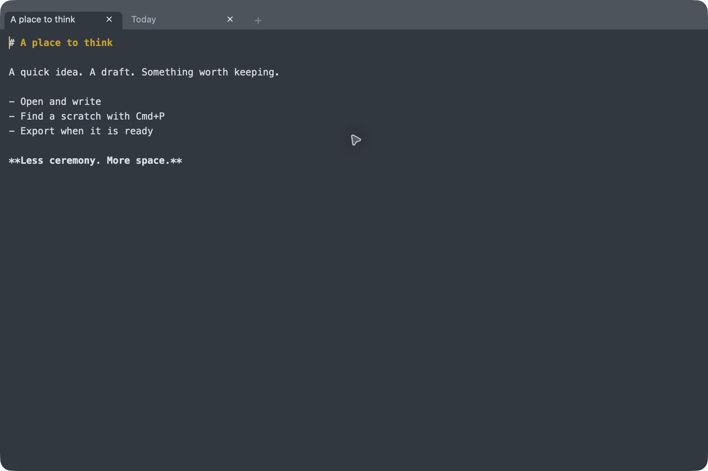

A small native scratchpad for Mac
A place
to think.
The idea before the document.
The draft before the message.
A little space to get it out of your head.
macOS · Apple silicon · Early preview

A lighter kind of writing
Start anywhere.
Keep what matters.
- 01
Open. Write.
No title, folder or save decision to make first. Your working text is saved locally and restored when you come back.
- 02
A scratch for each thought.
Keep a few drafts side by side. Search their titles and text with ⌘P, or rearrange the tabs to suit your train of thought.
- 03
Take the useful parts with you.
Export with ⌘S. Import a file as a scratch copy with ⌘O, leaving the original untouched. Closed scratches can be reopened for seven days.
Hands on the keyboard
Small commands.
A familiar rhythm.
Sublime-style editing, multiple cursors and a searchable command palette. Find the full shortcut reference inside the app.
- New scratch
- ⌘N
- Find a scratch
- ⌘P
- Command palette
- ⌘K
- Return to the previous tab
- ⌘⇧1
- Reopen a closed scratch
- ⌘⇧T
- All keyboard shortcuts
- ⌘⇧H
Make a little room
Your next thought
can start here.
Plain text first. Optional Markdown highlighting.
No account. Your scratches stay on your Mac.
Public downloads are being prepared.